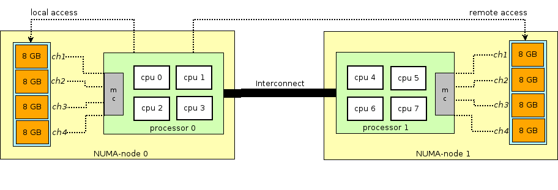
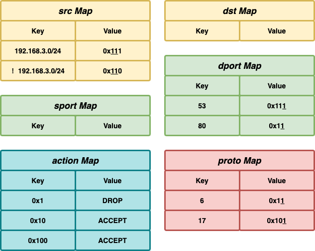

#0220 性能¶
NUMA 体系架构¶
NUMA（非统一内存访问）和 UMA （统一内存访问）是两种不同的 CPU-内存连接方式，NUMA 的架构大致如下图所示：
（mc 指 memory controller）
UMA 中所有 CPU 访问内存的时间都是一样的，但在 NUMA 体系架构下，每个 CPU 有直接相连的本地内存，访问本地内存比较快，访问非本地内存的时候，需要通过 CPU 之间的连接走远端的 mc 来访问，会比访问本地内存慢。
可以通过下面的命令可以查看机器的 NUMA 配置：
# lscpu
...
Socket(s): 2 // 两个 CPU 插槽
NUMA node(s): 2 // 两个 NUMA node（逻辑概念）
...
NUMA node0 CPU(s): 0,2,4,6,8,10,12,14,16,18,20,22
NUMA node1 CPU(s): 1,3,5,7,9,11,13,15,17,19,21,23
...
# numactl --hardware
available: 2 nodes (0-1)
node 0 cpus: 0 2 4 6 8 10 12 14 16 18 20 22
node 0 size: 32253 MB
node 0 free: 31868 MB
node 1 cpus: 1 3 5 7 9 11 13 15 17 19 21 23
node 1 size: 32155 MB
node 1 free: 31747 MB
node distances:
node 0 1
0: 10 20
1: 20 10
如何接收/发送百万 pps UDP 包¶
https://blog.cloudflare.com/how-to-receive-a-million-packets/
使用 sendmmsg ，recvmmsg 等批量发送/接收接口，减少频繁系统调用的上下文切换负载。
# 发送伪代码
fd = socket.socket(socket.AF_INET, socket.SOCK_DGRAM)
fd.bind(("0.0.0.0", 65400)) # select source port to reduce nondeterminism
fd.connect(("192.168.254.1", 4321))
while True:
fd.sendmmsg(["\x00" * 32] * 1024)
# 接收伪代码
fd = socket.socket(socket.AF_INET, socket.SOCK_DGRAM)
fd.bind(("0.0.0.0", 4321))
while True:
packets = [None] * 1024
fd.recvmmsg(packets, MSG_WAITFORONE)
压测的时候源 IP 和 目的 IP 一般都是固定的，默认 udp 仅使用这两个 IP 来将包哈希到不同的 rx 队列去，可以修改哈希方法使用 IP 和端口。
# 查看当前 udp 哈希方法
ethtool -n eth0 rx-flow-hash udp4
# 修改 udp 哈希方法为 hash(src ip, src port, dst ip, dst port)
ethtool -N eth0 rx-flow-hash udp4 sdfn
# 修改 udp 哈希方法为 hash(src ip, dst ip)
ethtool -N eth0 rx-flow-hash udp4 sd
- 网卡的 rx 队列和上层应用程序绑定的 CPU 在同一个 NUMA Node 上时性能最好。
- 同一个 fd 描述符，使用多线程接收性能还不如单线程，因为存在锁竞争，绕过的一个方法就是使用 SO_REUSEPORT ，创建多个 fd 描述符监听同一端口。
字节 xdp acl 实现方案（用于替代 iptables）¶
https://mp.weixin.qq.com/s/25mhUrNhF3HW8H6-ES7waA
将规则分拆后分别存入 src、dst、sport、dport，proto，action 这 5 个 Map，key 为 ip、port、proto，value 为 bitmap，bitmap 每一个 bit 代表一条规则。0x1 是第一条规则，0x10 是第二条规则，依次类推。
{kind=link}
匹配的时候使用 IP 包的 ip、port 等为 key 在所有 Map 中查找 value，然后将所有的 value 或到一起，使用下面这个 bit hack 来取到最低位的 bit，即为最先匹配的规则编号，然后使用规则编号在 action map 中查找对应的 action。
bitmap &= -bitmap
https://stackoverflow.com/questions/12247186/find-the-lowest-set-bit
对于 cidr（比如 192.168.0.0/24），是把其描述的所有 IP 都遍历出来放入 map 还是直接将原始 cidr 描述放入 map，如果是原始 cidr，是不是需要遍历 map？